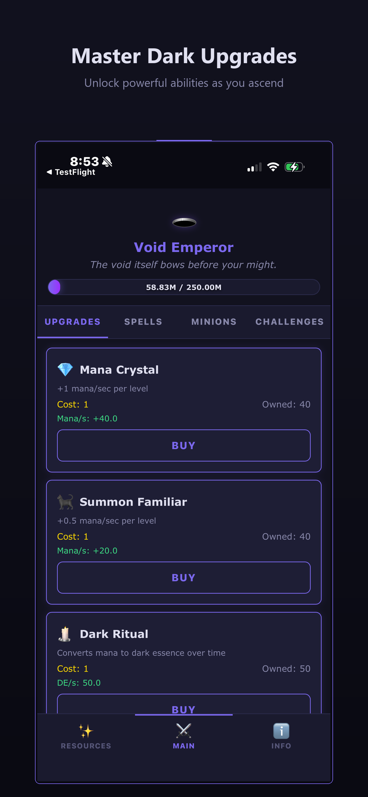
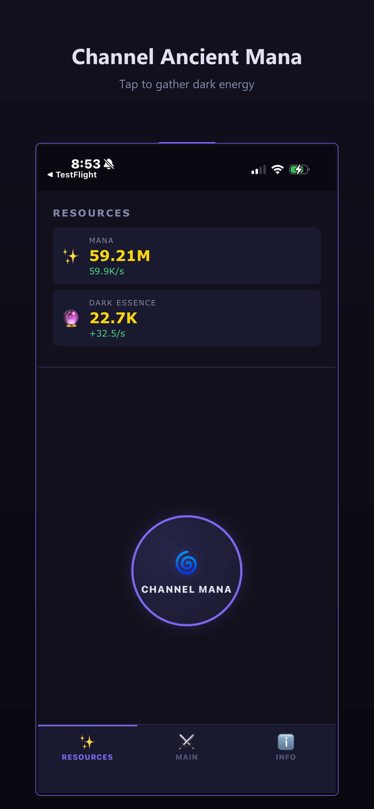
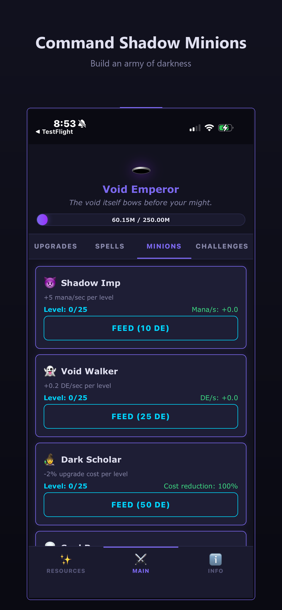
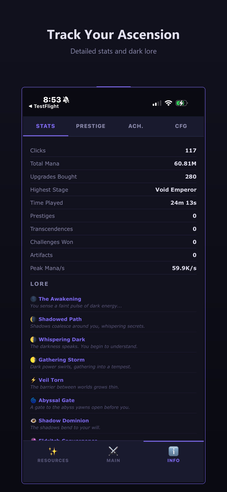
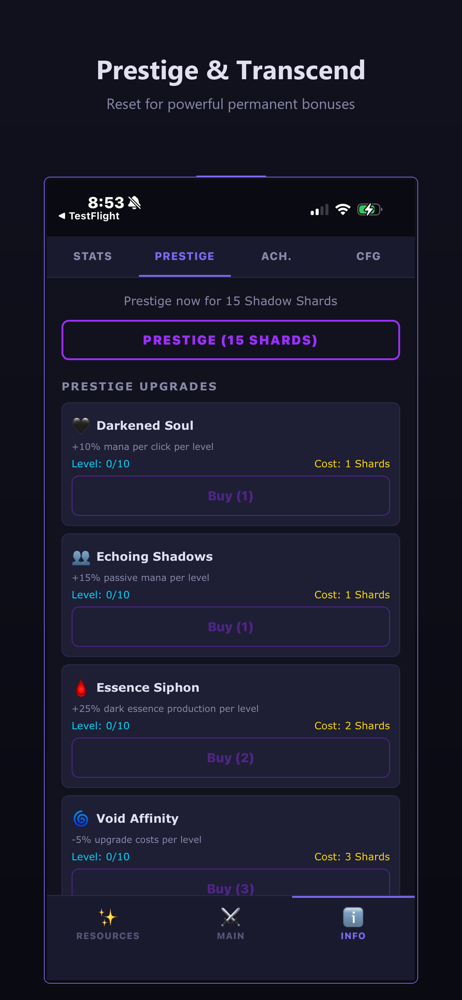
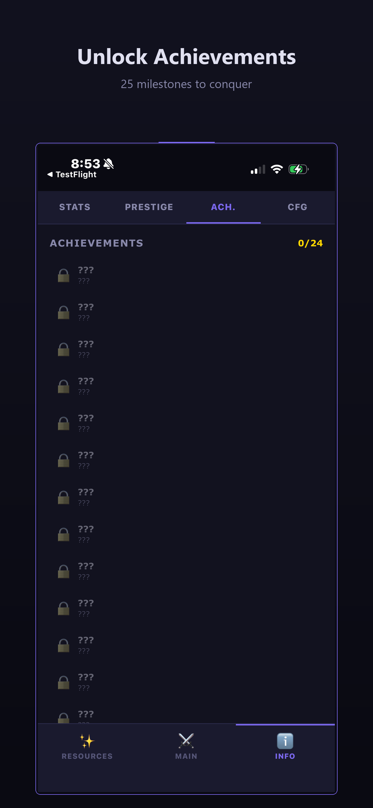

Dark Fantasy Idle RPG
Begin as a fledgling dark mage and harness the flow of mana to fuel your rise through 12 stages of power. Unlock upgrades, cast spells, command minions, and collect artifacts as you build an unstoppable engine of dark energy.
Every mechanic feeds into the next. Upgrades fuel spells, spells empower minions, and artifacts amplify everything.
Progress from The Awakening to Primordial Darkness, each stage unlocking new abilities and deeper challenges.
Cast Mana Surge, Dark Harvest, Void Pulse, and more. Set up the auto-caster or take manual control for maximum impact.
Recruit and level minions from the Shadow Imp to the Abyssal Herald, each providing unique passive bonuses.
Discover 8 artifacts across 4 rarity tiers. Complete 3 artifact sets for massive bonuses. Enhance and reroll for power.
Test your skill in 5 restricted runs that strip away your power and reward you with permanent upgrades.
Rebirth for Shadow Shards, then transcend for Void Crystals. Two layers of permanent progression.
Unlock the Shadow Automaton to enable auto-buyers, auto-caster, and auto-prestige. Your dark empire runs itself.
Discover upgrade synergies that reward smart pairing with powerful bonus multipliers to production and clicks.
Track milestones and earn permanent bonuses. Plus offline progress for up to 8 hours while you're away.
Scroll through gameplay from upgrades to prestige. Dark theme, responsive layout, built for mobile and desktop.






Each stage draws you deeper into the void. How far will you ascend?
Begin your journey into darkness. Free, private, and endlessly deep.